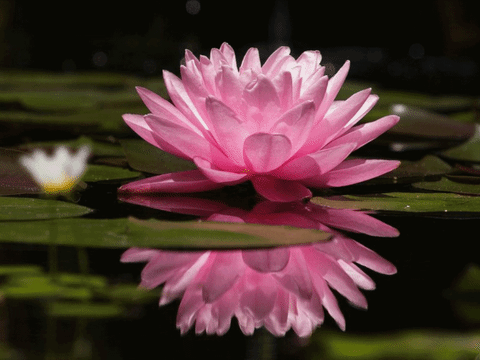

Learning Web Standards
Why I Love Water Lilies
I chose a gif of a water lily because they are my favorite type of flower.
Water lilies bloom year round but, the flower only lasts about 4 days before sinking and decomposing
Water lilies are not actually lilies. They look similar to lilies but, they're in the same family as lotuses.
Water lilies can live for several decades
